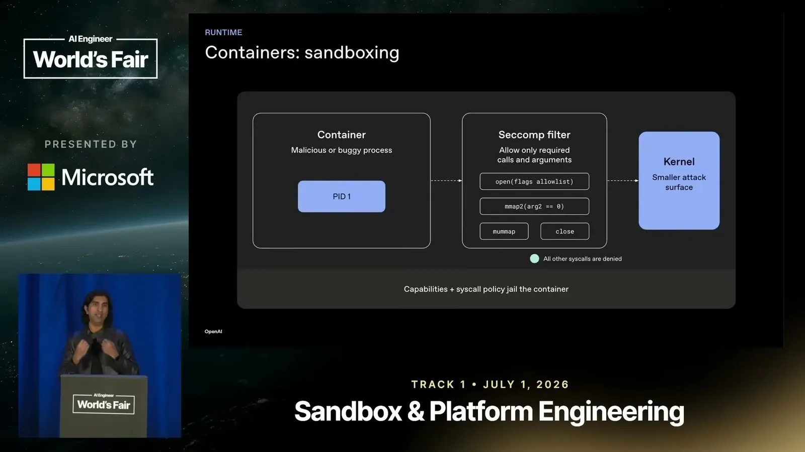
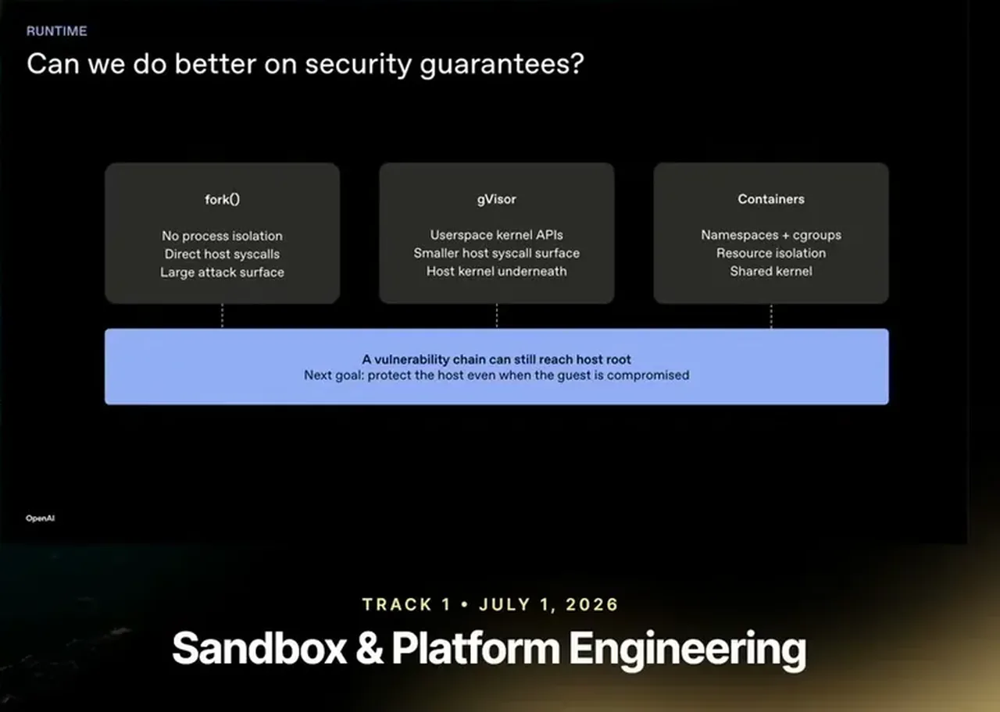
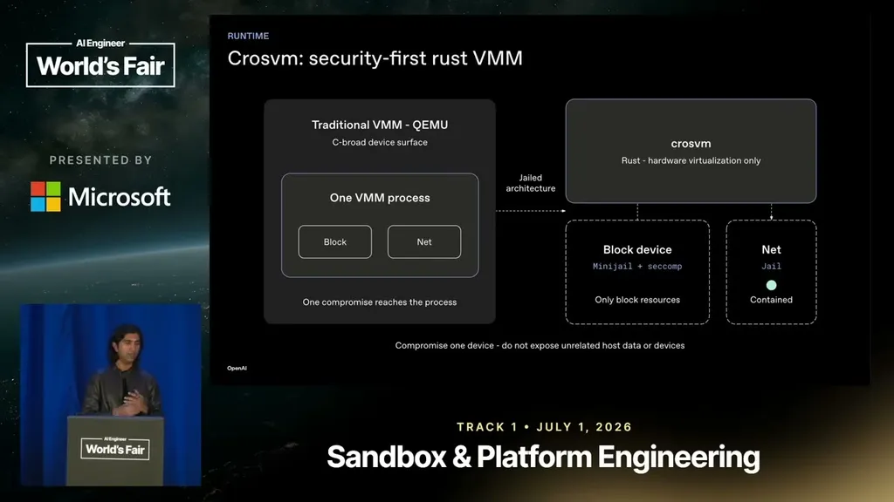
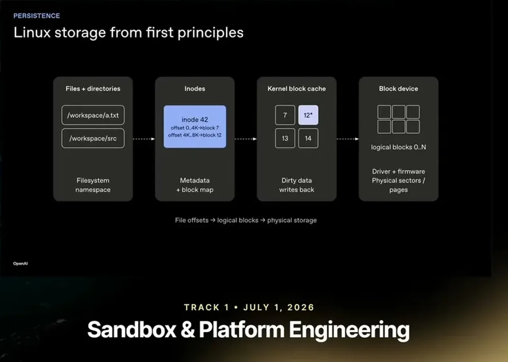
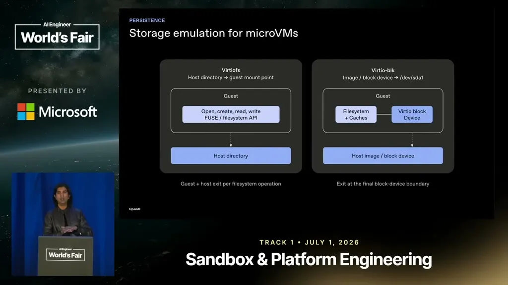
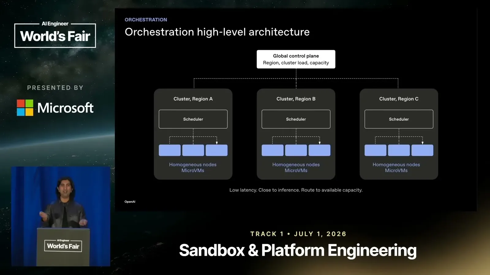

From fork() to Fleet: Designing an Agent Sandbox Cloud
OpenAI describes the full sandbox cloud stack: an isolation ladder ending at micro VMs, incremental copy-on-write snapshots, NBD-backed tiered storage, and fleet orchestration for multi-day agent runs.
If you only read one thing
- Isolation options fall on a security ladder: fork/exec is fastest but fully exposes the host kernel; containers add namespace/cgroup isolation but still share the host kernel; gVisor moves syscalls to user space but a chained sentry-to-kernel exploit is still possible; only hardware virtualization (micro VMs) protects the host even if the guest kernel is fully compromised.
- Bhardwaj's direct recommendation for anyone building agent sandboxes: use micro VMs from the start rather than working through containers and gVisor first.
- Persistence (incremental, copy-on-write snapshots plus NBD-backed tiered block storage) unlocks reliability at scale, recovery from node failure, and long-running or Monte Carlo-style multi-day agent tasks; Codex's longest recorded 'gold mode' run was 3 days at the time of the talk.
This traces the isolation ladder OpenAI climbed to micro VMs, then the persistence layer built on top of that boundary (ours).
Why this talk is a blueprint, not a take (ours)
Scope: The isolation and persistence stack behind OpenAI’s agent sandbox cloud, covering how untrusted model-generated code is run safely at ChatGPT/Codex scale and how that state is checkpointed and restored across a fleet.
A security ladder from fork/exec through containers and gVisor to hardware-virtualization micro VMs (built on Rust VMMs like CrosVM), plus a persistence layer of incremental copy-on-write snapshots and NBD-backed tiered block storage, orchestrated by a control plane that schedules restores to whichever node already holds the needed snapshot layers. Bhardwaj’s direct recommendation is to skip straight to micro VMs rather than climbing the ladder.
Prerequisites the talk implies:
- A Rust-based hardware-virtualization VMM (CrosVM, Firecracker, or Cloud Hypervisor) rather than a general-purpose VMM like QEMU
- A jailed per-device architecture (separate processes for block and net) so compromising one device does not expose unrelated host resources
- An incremental, diff-based snapshot mechanism, since full saves on every turn are too slow and expensive at scale
- A block-device storage layer (NBD-backed, tiered to object storage) rather than NFS, because model-driven filesystem access needs POSIX compliance and performance NFS does not provide
- A scheduler that is snapshot-lineage aware so it can route restores to the node with the least data to transfer
What the talk does not say:
- No cost or engineering-headcount figures for building or operating the sandbox fleet
- No numbers on isolation-layer overhead (latency or throughput cost of micro VMs vs containers) to weigh against the security gain
- No detail on how the global control plane itself is made fault-tolerant, only that regional schedulers route to homogeneous micro-VM nodes
- No discussion of the security assumptions specific to research (throughput-optimized) vs product (latency-optimized) sandboxes beyond the one comparison slide
If you were to replicate one thing first: Skip straight to a Rust-based hardware-virtualization VMM (CrosVM, Firecracker, or Cloud Hypervisor) for the isolation boundary instead of starting with containers or gVisor, per Bhardwaj’s direct recommendation.
| Component | What it does (from the talk) | Evidence | Slide |
|---|---|---|---|
| fork/exec | Runs the untrusted process with direct host syscalls and no process isolation; native performance but the largest attack surface | c1 · 11:35 |  |
| Containers (namespaces + cgroups + seccomp) | Isolates resources and filters syscalls with a seccomp allowlist, but every container still shares the host kernel as its attack surface | c2 · 15:40 | |
| gVisor | Intercepts syscalls in a user-space kernel (the sentry) to shrink the host syscall surface, but the sentry and gofer still run on top of the host kernel | c3 · 17:10 |  |
| CrosVM (Rust micro VMM) | Hardware-virtualization-only VMM written in Rust for memory safety, replacing QEMU’s C-based broad device surface with a jailed per-device architecture (block, net) so compromising one device does not expose unrelated host data | c4 · 19:20 |  |
| Virtio device model | Guest and host communicate through virtio PCI devices rather than direct hardware access, the mechanism that lets a micro VM exit safely onto the host | c4 · 19:20 | |
| Incremental snapshot layer | Saves disk state as diffs rather than full copies each turn, keeping checkpointing affordable at ChatGPT/Codex scale | c8 · 34:05 |  |
| NBD-backed tiered block storage | Exposes the sandbox disk as a block device backed by NBD with a tiered cache to object storage, avoiding NFS because it is not performant or POSIX-compliant enough for model-driven filesystem use | c9 · 40:20 |  |
| Fleet orchestration (control plane + regional schedulers) | A global control plane tracks region and cluster load and capacity; per-region schedulers route requests to homogeneous micro-VM nodes, favoring the node already holding the most snapshot layers to minimize data transfer | c10 · 43:30 |  |
The isolation ladder, and what each layer still allows
- Fork/exec is the fastest option but gives the executed process direct access to the kernel and no protection against a runaway process starving the node.
- Containers add namespace and cgroup isolation plus optional seccomp filtering, but still run on the same host kernel, so a container escape can still reach it. gVisor intercepts syscalls in a user-space kernel (the sentry), which is safer but still sits on top of the host kernel, so a two-step chained exploit through the sentry or gofer remains possible.
“It's native performance, but everything else is very bad about this solution.”
said at 11:35“containers interact with the same host kernel, so they do they do have some protections, but at the end it's the same host kernel they're trying to attack, right? And they can get root and kernel exploits etc.”
said at 15:40“the sentry and the gofer are still on top of the host kernel. So, if there is an exploit on them, you can still have a chained two-step exploit.”
said at 17:10Micro VMs as the real security boundary
- Hardware virtualization runs the guest kernel in a separate CPU context (VMX non-root) from the host (VMX root), so a fully compromised guest kernel still cannot reach the host.
- Bhardwaj traces the lineage of Rust-based 'micro' VMMs (CrosVM, Firecracker, Cloud Hypervisor) that replaced QEMU for memory safety and smaller attack surface, and states his direct recommendation to skip straight to micro VMs when building an agent sandbox.
“even if you can get uh root or execute in like ring zero in the guest, your host is still protected.”
said at 19:20“if you're a startup or a founder like in this space, like let me save you the story and two years of grief. Just please use micro VMs from the start.”
said at 29:15Persistence turns sandboxes into durable workers
- Without disk persistence, a node failure or model flake destroys hours of in-sandbox work (repos, presentations) and wastes GPU spend.
- Periodic checkpointing lets a sandbox be restored on a different node after failure, and unlocks long-running or Monte Carlo-style exploration where a harness checkpoints, branches, and backtracks across many days.
- Bhardwaj notes Codex's longest observed 'gold mode' run was 3 days at the time of the talk, with the trend toward longer tasks continuing.
“If you keep checkpointing it periodically and if the node fails or the cluster fails, you can now restore the sandbox in the exact checkpoint state on another node.”
said at 31:55“my I think 3 days is my record for running something, but like now people are doing longer and longer tasks and I think this trend will continue in the cloud as well.”
said at 32:30Making snapshotting and storage cheap at scale
- Snapshots must be incremental (diff-based) rather than full saves, since saving gigabytes on every turn would be prohibitively expensive and slow at ChatGPT/Codex scale.
- For always-on persistence, Bhardwaj describes exposing the sandbox's disk as a block device backed by NBD with a tiered cache to object storage, since NFS is not performant or POSIX-compliant enough for how models interact with a filesystem.
“if I have to save gigabytes of data at every turn, like like I'm going to bankrupt the company and like it's just a slow experience regardless”
said at 34:05“NFS, for instance, isn't as performant and is not POSIX-compliant. And I think our models are just very good at anything POSIX compliant and standard.”
said at 40:20Orchestrating across a fleet
- At fleet scale, a scheduler routes requests to the node needing the least data transfer by tracking which nodes already hold which layers of a snapshot's lineage, improving both restore latency and reliability.
“node B has all the layers that you need. So, the scheduler then routes you and it it gives it the highest score and routes it because it has all the snapshot layers.”
said at 43:30
Underlying detail — every claim, typed and timestamped (10)
| Stance | Claim | t |
|---|---|---|
| asserts | Fork/exec is the fastest sandboxing approach but offers essentially no isolation. | 11:35 |
| warns | Containers isolate resources via namespaces and cgroups but a compromised container can still attack the shared host kernel. | 15:40 |
| warns | gVisor's sentry and gofer still run on the host kernel, so a two-step chained exploit through them remains possible. | 17:10 |
| asserts | Hardware virtualization keeps the host protected even if the guest kernel is fully compromised, because guest and host run in separate CPU contexts. | 19:20 |
| recommends | Teams building agent sandboxes should start with micro VMs rather than working through containers and gVisor first. | 29:15 |
| asserts | Periodic checkpointing lets a sandbox be restored on another node after a failure, improving reliability at scale. | 31:55 |
| asserts | Codex's longest recorded continuous 'gold mode' run was 3 days, with tasks trending longer over time. | 32:30 |
| recommends | Snapshots must be incremental diffs rather than full saves to be affordable at scale. | 34:05 |
| asserts | NFS is not performant or POSIX-compliant enough for how agent-driven filesystems are used. | 40:20 |
| asserts | The scheduler routes restores to whichever node already holds the most snapshot layers needed, minimizing data transfer. | 43:30 |
Machine-readable copy embedded in this page (script#ontology) and in the corpus ontology.